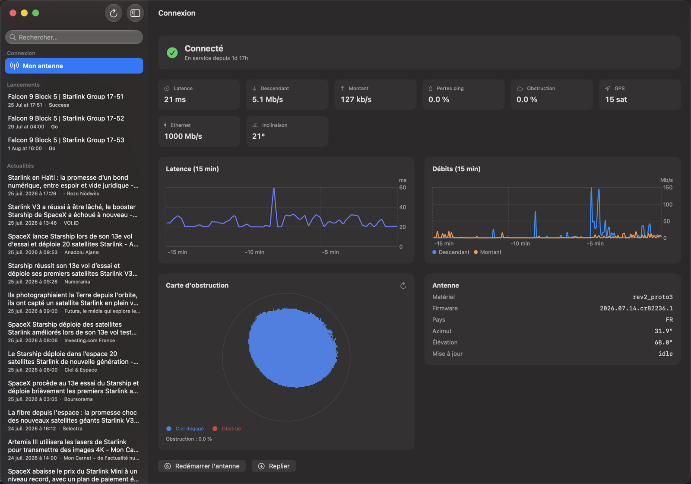
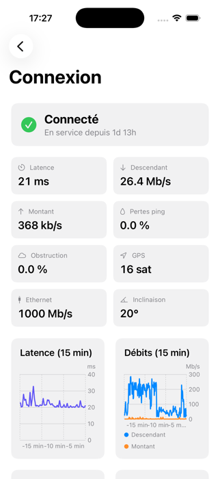
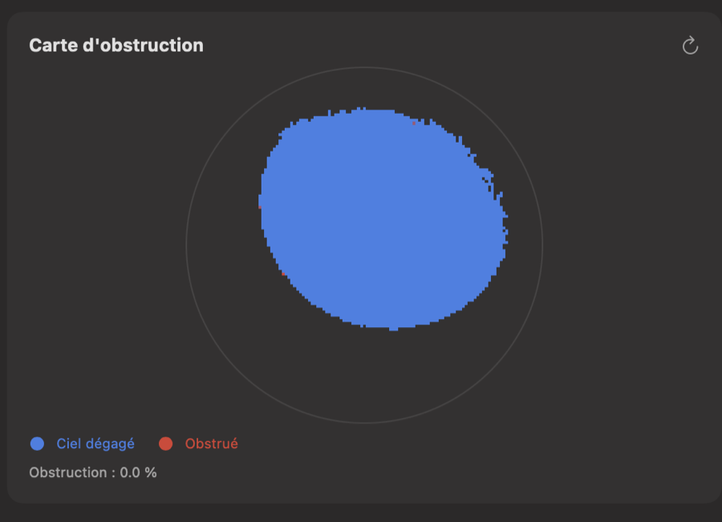

A native macOS & iOS app that connects straight to your dish's own local API — live status, latency & throughput history, obstruction map, and one-click reboot/stow. Plus Starlink news, upcoming launches and constellation stats on the side. Une app native macOS et iOS qui se connecte directement à l'API locale de votre antenne — état en direct, historique de latence et de débit, carte des obstructions, redémarrage ou rangement en un clic. Et à côté, l'actualité Starlink, les prochains lancements et les stats de la constellation. 原生 macOS 與 iOS 應用程式，直接連上天線本身的區域 API——即時狀態、延遲與吞吐量歷史、遮蔽圖，以及一鍵重新啟動或收合。旁邊還有 Starlink 新聞、即將到來的發射與星系數據。

featuresfonctions功能
The dish exposes a detailed local API on its own network — StarlinkInfos just puts it on screen, refreshed every couple of seconds. L'antenne expose une API locale détaillée sur son propre réseau — StarlinkInfos ne fait que l'afficher, rafraîchie toutes les deux secondes. 天線在自己的網路上開放一組詳盡的區域 API——StarlinkInfos 只是把它顯示出來，每隔幾秒更新一次。
Connection status, uptime, latency, throughput, GPS lock, Ethernet speed and dish tilt — polled live from the dish itself. État de la connexion, temps de fonctionnement, latence, débit, verrouillage GPS, vitesse Ethernet et inclinaison — interrogés en direct sur l'antenne elle-même. 連線狀態、運行時間、延遲、吞吐量、GPS 定位、乙太網速度與天線傾角——全部即時向天線本身查詢。
The last 15 minutes of ping and download/upload speed, straight from the dish's own history buffer. Les 15 dernières minutes de ping et de vitesse descendante/montante, directement issues du tampon d'historique de l'antenne. 最近 15 分鐘的 ping 與上下行速度，直接取自天線本身的歷史緩衝區。
The exact sky-view SNR grid the dish uses to detect obstructions — rendered as a live radar view. La grille SNR de vue du ciel que l'antenne utilise pour détecter les obstructions — rendue comme un radar en direct. 天線用來偵測遮蔽的天空視野 SNR 網格——以即時雷達畫面呈現。
Reboot or stow/unstow the dish in one click, always behind a confirmation — nothing fires by accident. Redémarrez ou rangez/déployez l'antenne en un clic, toujours derrière une confirmation — rien ne part par accident. 一鍵重新啟動或收合／展開天線，且一律需要確認——不會誤觸。
A live feed of Starlink coverage, in French or English depending on your app language. Un flux en direct de l'actualité Starlink, en français ou en anglais selon la langue de l'app. Starlink 相關報導的即時訊息流，依應用程式語言以法文或英文顯示。
Upcoming Starlink launches with a countdown, plus a live count of satellites currently in orbit. Les prochains lancements Starlink avec compte à rebours, plus un décompte en direct des satellites en orbite. 即將到來的 Starlink 發射與倒數計時，以及目前在軌衛星的即時數量。
a look insideun aperçu內部一覽
One shared codebase, native on macOS and iOS/iPadOS — the same dashboard, wherever you check it from. Une seule base de code, native sur macOS et iOS/iPadOS — le même tableau de bord, d'où que vous le consultiez. 單一共用程式碼，在 macOS 與 iOS/iPadOS 上皆為原生——不論從哪裡查看，都是同一個儀表板。


get starteddémarrer開始使用
Signed, notarized and Hardened-Runtime — it opens without any Gatekeeper warning. Just be on the Starlink network to see live dish data. Signée, notariée et en Hardened Runtime — elle s'ouvre sans aucun avertissement Gatekeeper. Il suffit d'être sur le réseau Starlink pour voir les données en direct. 已簽章、已公證並啟用 Hardened Runtime——開啟時不會出現任何 Gatekeeper 警告。只要連上 Starlink 網路即可看到即時數據。
Grab the latest .dmg from GitHub Releases and mount it.
Récupérez le dernier .dmg depuis GitHub Releases et montez-le.
從 GitHub Releases 取得最新的 .dmg 並掛載。
Drag StarlinkInfos.app into /Applications.
Glissez StarlinkInfos.app dans /Applications.
將 StarlinkInfos.app 拖入 /Applications。
Open it while connected to your Starlink Wi-Fi. Requires macOS 15 or later. Ouvrez-la en étant connecté à votre Wi-Fi Starlink. Nécessite macOS 15 ou ultérieur. 在連上 Starlink Wi-Fi 時開啟。需要 macOS 15 或以上版本。
ready?prêt ?準備好了嗎？
Free, open-source and native. macOS 15+ / iOS 18+. Gratuite, open source et native. macOS 15+ / iOS 18+. 免費、開源、原生。macOS 15+ / iOS 18+。